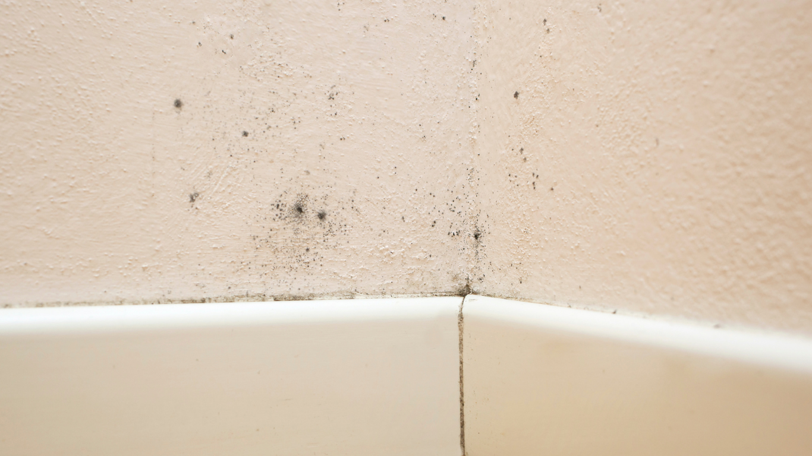

We provide professional mold remediation services that help homeowners address contamination quickly while restoring safe, healthy indoor conditions with minimal disruption.
One of the first questions homeowners ask after discovering mold is how long the cleanup process will take. The answer depends on several factors, including the size of the affected area, the source of moisture, and how far the mold has spread. Understanding the typical mold remediation timeline helps property owners prepare for the process and make informed decisions during restoration.
Every mold situation is different, which means no two remediation timelines are exactly alike. Small areas caused by a minor leak may be resolved within a few days, while larger contamination affecting multiple rooms can take significantly longer.
The biggest factor is the amount of affected material. Mold that remains isolated to surface areas is typically faster to remove than contamination that has spread behind walls, under flooring, or into insulation. Moisture levels also affect timing because all affected areas must be thoroughly dried before repairs begin.
Professional inspections help determine the scope of contamination early in the process. Moisture mapping, thermal imaging, and air quality testing allow restoration teams to identify hidden mold and create an accurate cleanup plan through experienced mold remediation services.
The remediation process usually begins with a detailed property inspection. During this stage, technicians identify visible mold growth, locate moisture sources, and determine whether contamination has spread to hidden areas.
This assessment often takes several hours depending on the size of the property. Once completed, homeowners receive a remediation strategy outlining containment procedures, material removal, drying requirements, and estimated completion time.
In some situations, additional testing may be recommended to evaluate indoor air quality or confirm the type of mold present. According to the Environmental Protection Agency, controlling moisture is the most important step in preventing mold from returning after cleanup.
Before cleanup begins, professionals isolate affected areas to prevent spores from spreading throughout the property. Containment barriers, negative air machines, and air filtration systems are commonly used during this phase.
For smaller projects, containment setup may only take a few hours. Larger remediation jobs involving multiple rooms or severe contamination can require additional preparation time. Safety measures are critical because disturbing mold without proper containment can spread spores into unaffected areas.
Homeowners may need to temporarily avoid certain spaces during remediation, especially if contamination affects HVAC systems or large portions of the home.
The removal phase often determines the overall remediation timeline. Porous materials such as drywall, carpeting, insulation, and ceiling tiles may need to be removed if mold has penetrated deeply into them. Non-porous surfaces are usually cleaned and treated rather than replaced.
Once damaged materials are removed, the drying process begins. Industrial air movers and dehumidifiers help eliminate trapped moisture from structural materials. Depending on humidity levels and the extent of water intrusion, drying may take several days.
Homes with previous leaks or unresolved water damage may require additional moisture control before reconstruction can begin. Fast response and professional drying reduce the chance of mold returning after cleanup and often shorten the overall water damage restoration timeline.
After drying is complete, technicians clean and sanitize remaining surfaces using specialized antimicrobial treatments. HEPA filtration systems remove airborne spores and improve indoor air quality during this stage.
Some remediation projects end after cleaning and drying, while others require reconstruction. Replacing drywall, insulation, flooring, or cabinetry can add several days or weeks depending on material availability and the scope of repairs. Full-service restoration services simplify this process by managing both remediation and rebuilding under one team.
Final inspections are often performed to confirm moisture levels are stable and contamination has been removed successfully.
Most homeowners want to know whether they can stay in the home during cleanup. In smaller projects, this is often possible if containment is effective. Larger remediation jobs involving HVAC contamination or widespread mold may require temporary relocation for safety and convenience.
Another major concern is how quickly normal routines can resume. Clear communication from the restoration team helps homeowners understand daily progress, expected timelines, and any delays caused by drying or reconstruction needs.
Cost is also closely tied to remediation length. The longer moisture remains untreated, the greater the chance of structural damage and additional repairs. Early intervention often limits both project duration and overall restoration expenses.
Quick action is one of the most effective ways to shorten remediation timelines. Addressing leaks immediately, improving ventilation, and scheduling inspections at the first sign of mold help contain damage before it spreads.
Keeping affected areas accessible also improves efficiency during cleanup. Removing personal belongings and documenting visible damage early helps restoration teams begin work faster. Delays often occur when hidden moisture sources remain unresolved, making professional inspection especially valuable.
Mold remediation involves more than surface cleaning. Proper containment, moisture removal, and structural drying are essential to restoring a safe indoor environment and preventing future growth.
If you’re looking for experienced support during the mold remediation timeline, SWAT Restoration provides professional mold cleanup, water damage restoration, and reconstruction services throughout North Texas. Our team responds quickly, communicates clearly, and guides homeowners through every stage of the process from inspection to final repairs. When mold affects your home, having a trusted restoration team helps make recovery faster, safer, and far less stressful.